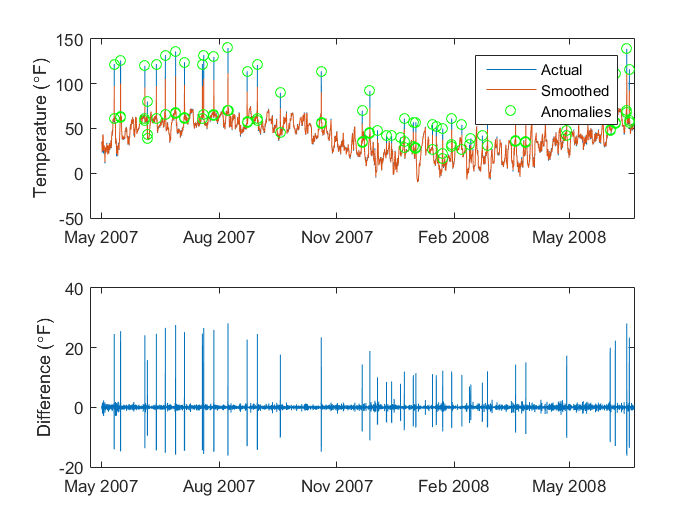
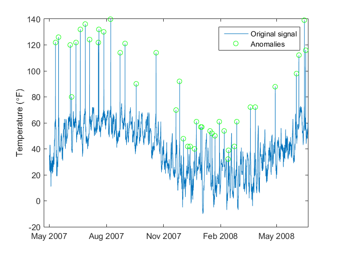

Script 6: Clean up Weather Data
Our data may contain anomalies or bad data points that we want to remove. Here we examine two example techniques for identifying when these occur.
Contents
Load in Data
clear;clc; % clean up load weather_original % pick sample to use as an example var = 'TemperatureKALB'; idx = 1:1e4; x = datenum(weatherData.Date(idx)); y = weatherData.(var)(idx,2);
Find anomalies using smoothing splines
A simple way to locate errors is to fit a smoothing spline to the data. Any large, sudden spikes will have a large difference between the original data and the smoothed data.
% fit smoothing spline and make prediction over data set fo = fit(x,y,'smoothingspline','Exclude',isnan(y)); yy = fo(x); % find points that don't meet error threhold error_threshold = 6; idxbad = abs(y(idx)-yy) > error_threshold; % plot results figure subplot(2,1,1),f1=plot(weatherData.Date(idx),[y yy]);ylabel('Load (MW)');hold on; plot(weatherData.Date(idxbad),y(idxbad),'go') ylabel('Temperature (\circF)') legend('Actual','Smoothed','Anomalies') subplot(2,1,2),f2=plot(weatherData.Date(idx),y-yy);ylabel('Error (MW)'); ylabel('Difference (\circF)') linkaxes([f1.Parent,f2.Parent],'x')
Find anomalies using slope outliers
Another way to identify anomalies is to example how the line slope changes. If there is a large change in one direction followed by a large change in the other, this could signify an anomaly.
% custom helper function to identify slope outliers [yyy,idxbad] = removeSpikes(y); % plot results figure; plot(weatherData.Date(idx),y); hold on % plot original data plot(weatherData.Date(idxbad),y(idxbad),'og'); hold off % identify anomalies legend('Original signal','Anomalies'); ylabel('Temperature (\circF)')
Remove Errors in Load Data
% remove spikes from the different signals parfor ii = 2:width(weatherData) weatherData{:,ii}(:,1) = removeSpikes(weatherData{:,ii}(:,1)); weatherData{:,ii}(:,2) = removeSpikes(weatherData{:,ii}(:,2)); end % save results to mat file save('weather_cleaned','weatherData');